🌱 Childhood
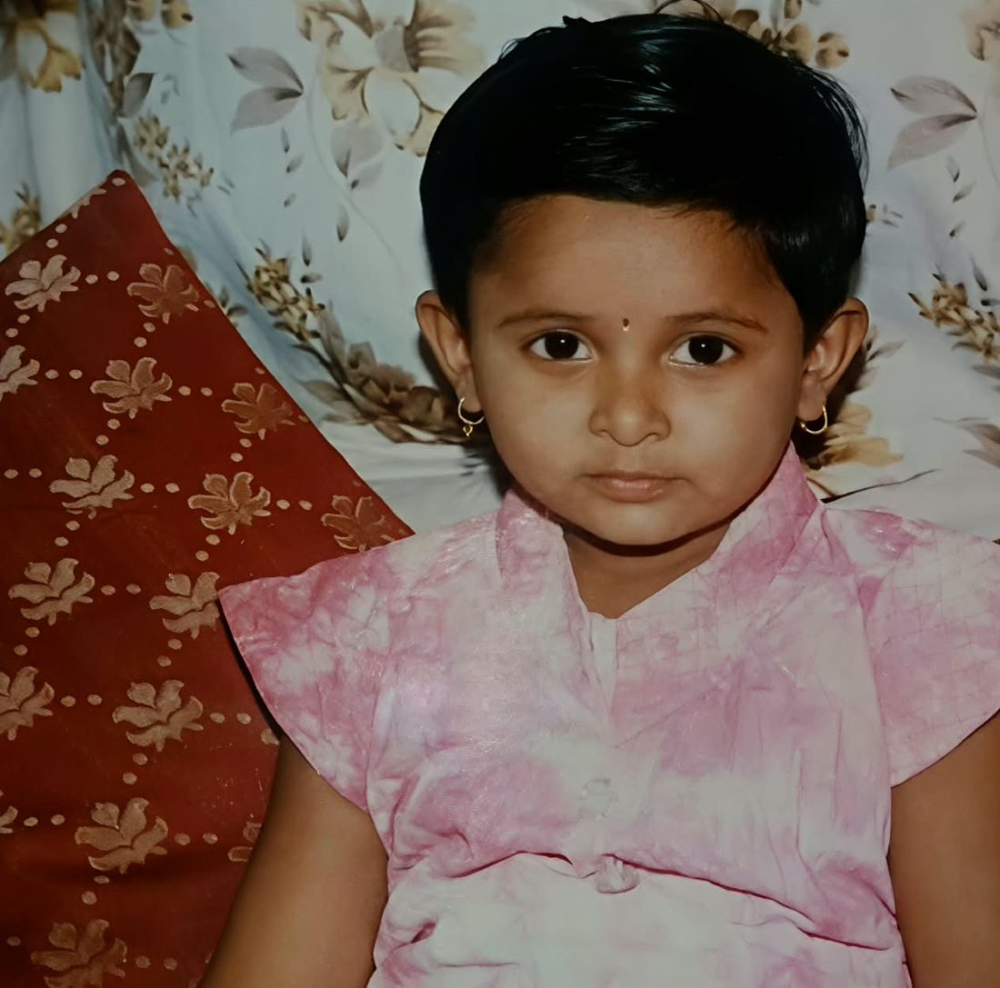
The little troublemaker
One Diwali, one firecracker, and the staircase of the house caught fire. At school, “टीचर, मला शी आली आहे” was the famous plan to escape back home.
You listened to no one. Some things never change. 😏
11:11
11 November 2026
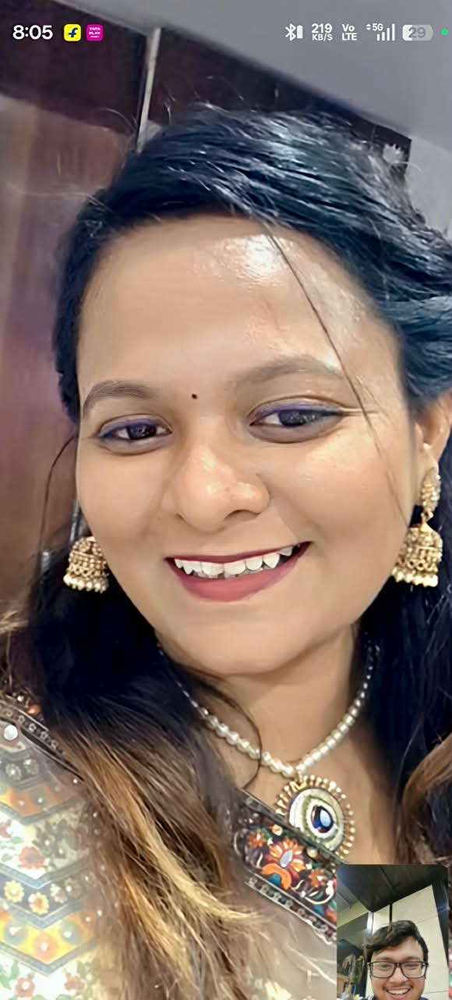
KSome people wish on stars.
My wish has a name, Kadambari.
Scroll slowly. Every leaf is a chapter of you.
🌱 Childhood

One Diwali, one firecracker, and the staircase of the house caught fire. At school, “टीचर, मला शी आली आहे” was the famous plan to escape back home.
You listened to no one. Some things never change. 😏
🌿 Class 10
You worked hard, your marks kept climbing, and in 10th the whole school stood behind its Head Girl.
People saw a leader in you long before you saw it yourself.
🌾 B.Sc. Agriculture
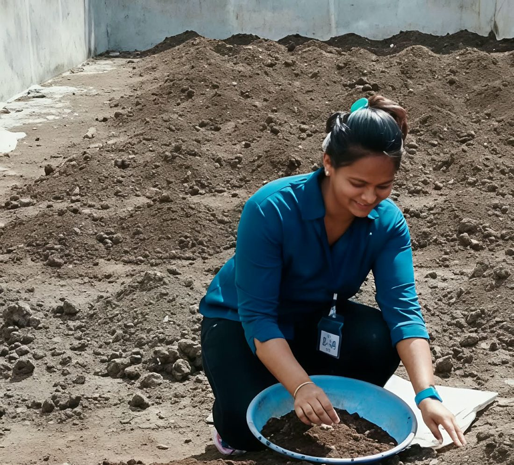
You earned your place in one of the top agriculture colleges in Maharashtra and shone in academics. You understand soil, seeds and seasons better than most people ever will.
Excellent at everything… except making friends with worms. 🪱😅
📚 Pune
Pune gave you long study days, a sharper mind, and the kind of general knowledge that still surprises people.
Those years made you disciplined. They made you strong.
And Pune gave you Shital, a best friend for life. 👭
An exam can test knowledge. It can never measure a person.
🤖 MBA in AI
Agriculture, governance, and now an MBA with artificial intelligence.
Very few people carry all three. You do.
🏍️ What makes you, you
Mountains, open roads and adventure sports. And after every ride, the only real question:
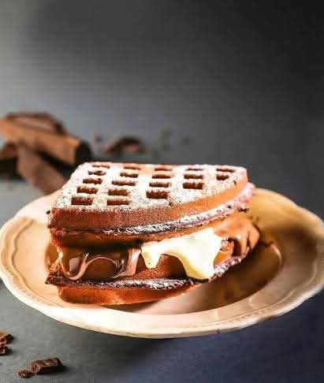
Belgian waffles🌺 The elder sister
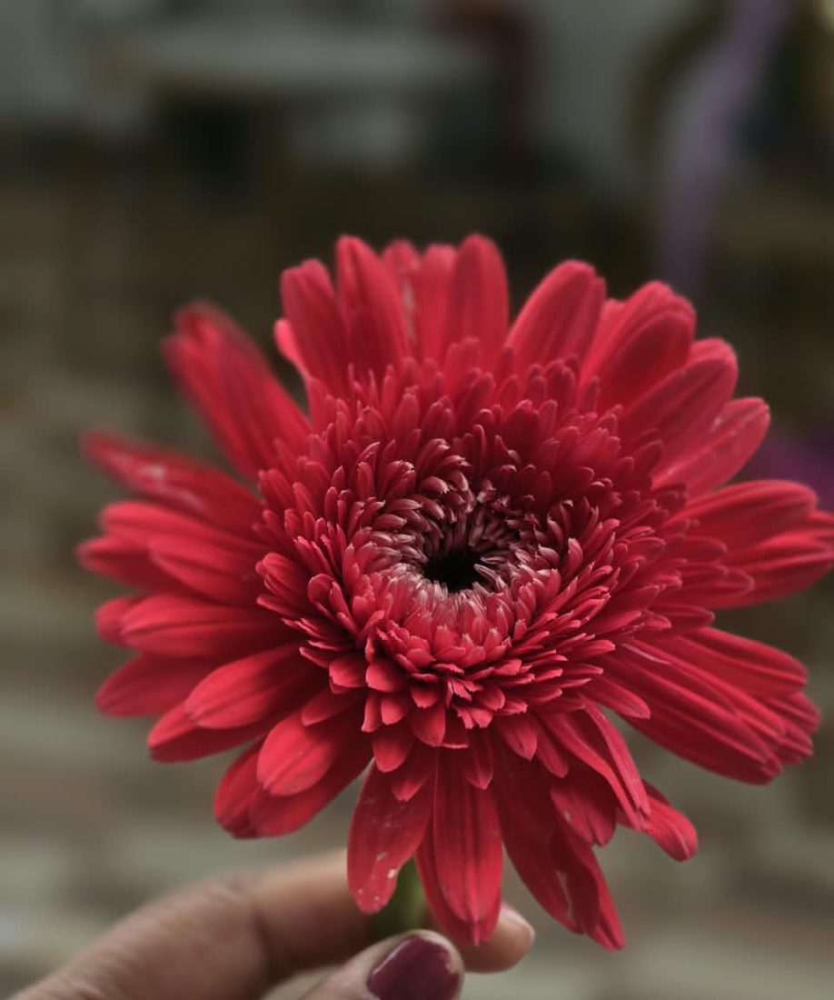
Long before all of this, you were already the elder daughter, looking after your family since you were little, often putting everyone before yourself.
Just like your favourite red gerbera: bright, strong, and the one who lights up the whole garden.
Look at everything you already are.
Now imagine what you’re going to become.
For today, and for every day you doubt yourself.
Tap to open
प्रिय कादंबरी,
माझी इच्छा तर तूच आहेस, कादंबरी. पण आज ११:११ ला मी एक गोष्ट मागितली, की तू स्वतःला एकदा माझ्या नजरेतून पहावं.
तू सगळ्या क्षेत्रांमध्ये काम केलंस. Agriculture ते MBA, सगळी माहिती तुला आहे. तुझं जनरल नॉलेज पण खूप छान आहे. तू काहीही करू शकतेस, ज्याचा आपण विचार पण केला नाहीये.
पुण्यातली ती वर्षं तुला आजही कधी कधी दुखावतात, हे मला माहिती आहे. पण ती वर्षं वाया गेली नाहीत. त्याच वर्षांनी आजची कादंबरी घडवली आहे. परीक्षा ज्ञान तपासू शकते, माणसाची किंमत नाही.
कधी कधी career चा विचार करून तुला टेन्शन येईल. रात्री झोप लागणार नाही, सगळे विचार डोक्यात फिरत राहतील. तेव्हा थोडं थांब. एक मोठा श्वास घे. सगळं आजच ठरवायची गरज नाही. एका वेळी एकच पाऊल.
तुला उशीर झालेला नाही. प्रत्येकाची वेळ वेगळी असते, आणि तुझी वेळ अजून यायची आहे.
आणि हे कायम लक्षात ठेव, तू एकटी नाहीस.
लहानपणापासून तू सगळ्यांची काळजी घेतलीस. आता थोडी स्वतःचीही काळजी घे, आणि स्वतःवर थोडा जास्त विश्वास ठेव.
जेव्हा कधी स्वतःवर शंका येईल, तेव्हा हे पत्र पुन्हा उघड. आणि आठव, तू खूप काही करू शकतेस. तू आधीच खूप काही आहेस.
तुझा,
हर्षवर्धन
This letter will always be here, whenever you need it.
— Harshvardhan
Before I ask you anything, let me show you what I see when I think of us.
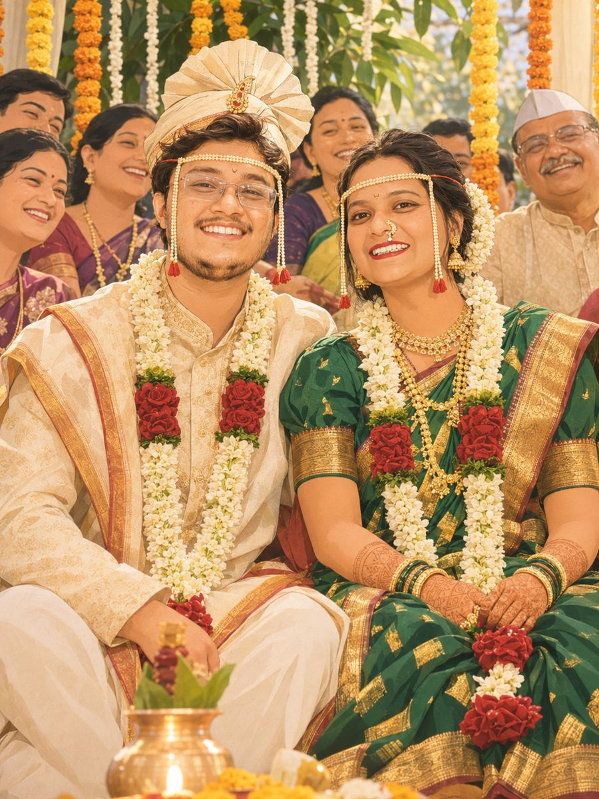
The day two families became one.
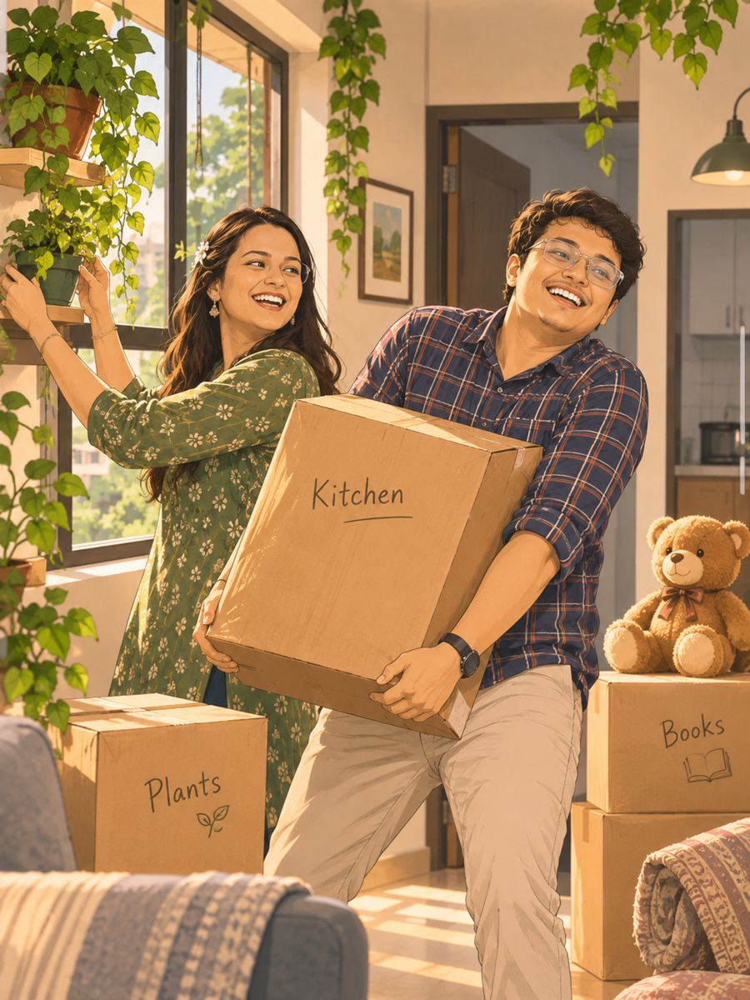
Your plants, my mess, our home.
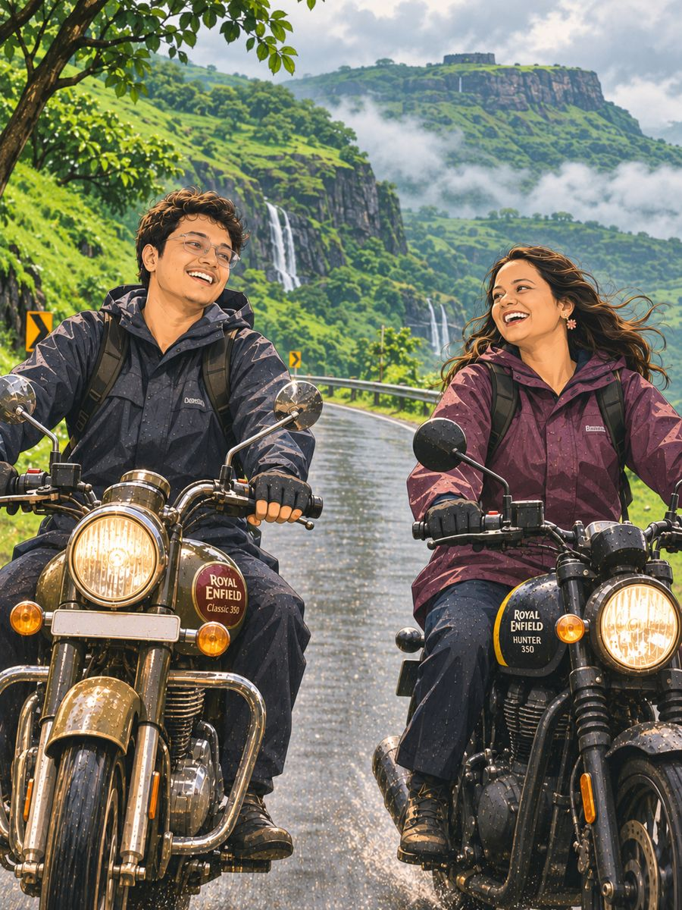
Two bikes, one road, no plans.
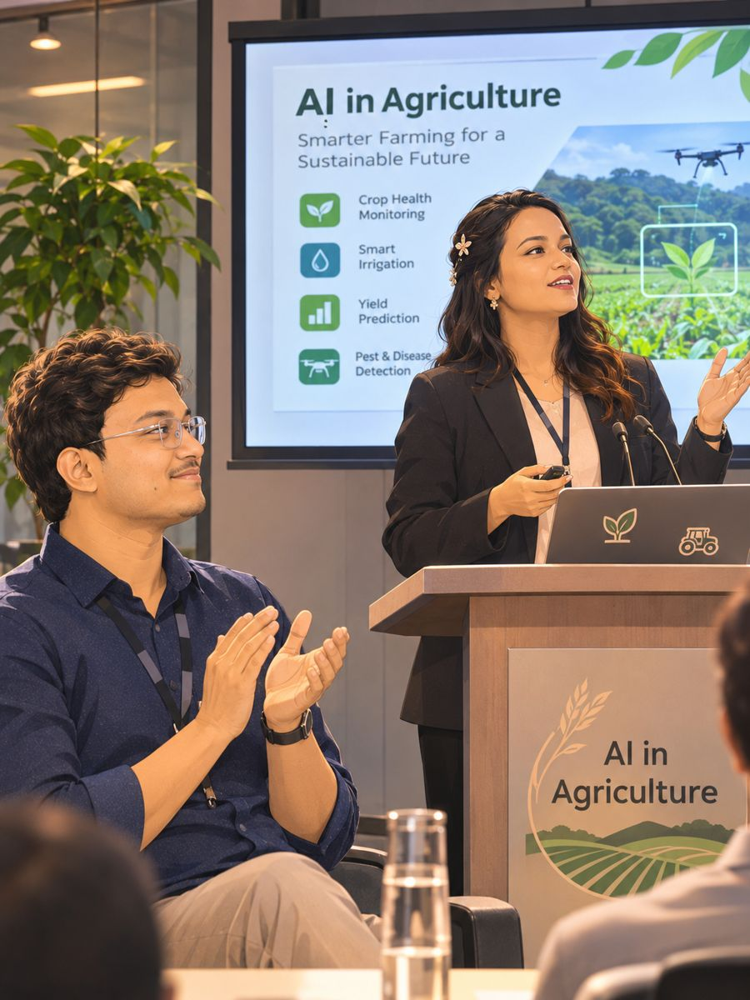
Cheering the loudest for each other’s wins.
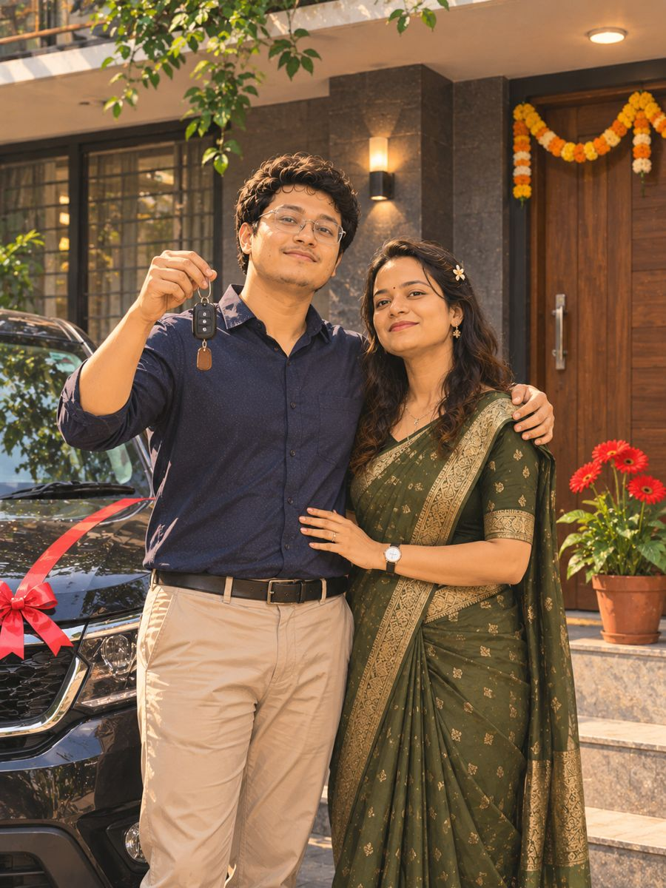
Building our dreams, brick by brick. Red gerberas at the door, of course.
Tiny troublemaker, just like their mother. We’ll keep them away from Diwali firecrackers. 😏
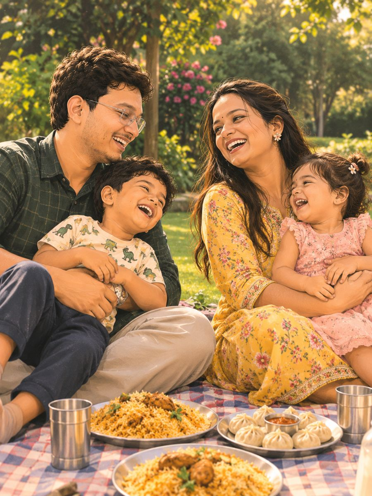
Biryani Sundays and momo nights.
Proud parents, still holding hands on every trek.
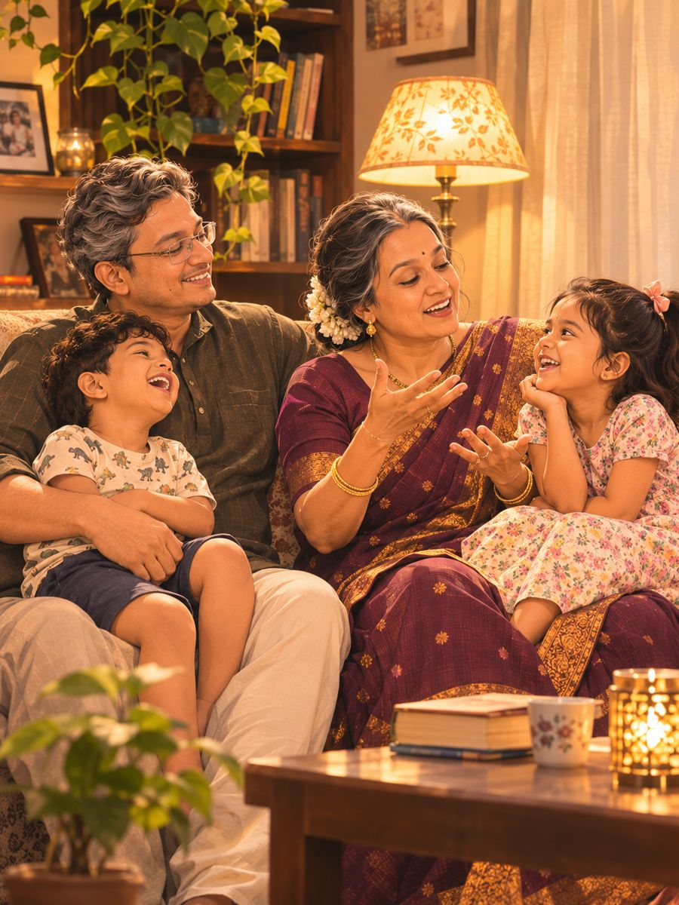
Aaji telling stories about the Head Girl who rode bikes in the mountains.
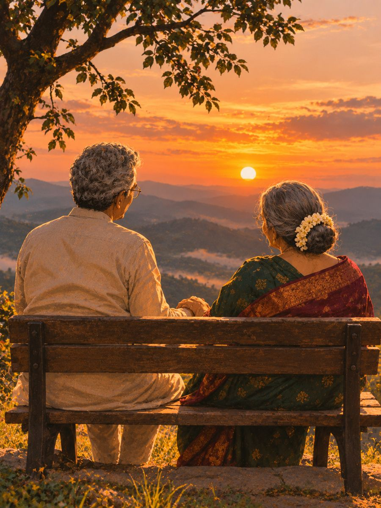
Till our last sunset, together.
And every single day in between,
I want it to be you.
Kadambari,
Thank you for choosing me, Kadambari.
I will keep every promise I made to you today, one day at a time, for the rest of our lives.
Your answer doesn’t change anything I wrote to you tonight. Every word in that letter is still true, and you still deserve every good thing in it.
I will always respect your decision, Kadambari.
सगळं नीट होईल, कादंबरी.
आशा सोडू नकोस.
जे तुझ्यासाठी आहे, ते तुला नक्की मिळेल.
उद्याच्या काळजीत आजचा दिवस वाया घालवू नकोस.
तू जशी आहेस, तशीच खूप छान आहेस.
आणि लक्षात ठेव, तू कधीच एकटी नाहीस.
— हर्षवर्धन
The end. ✨
Read your letter again